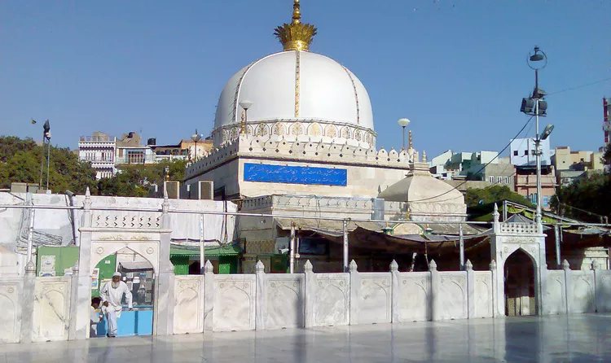
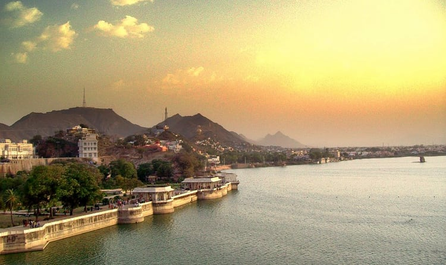
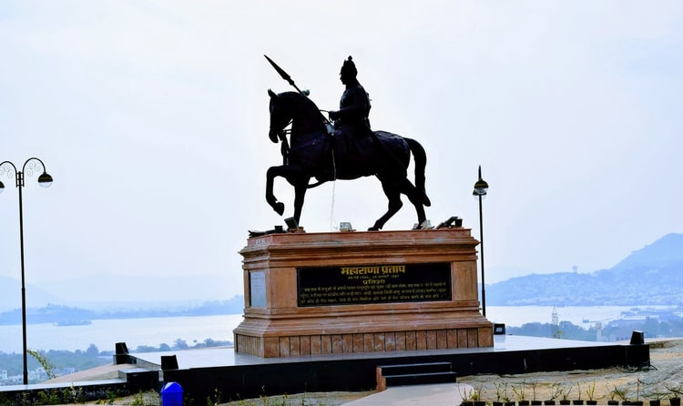
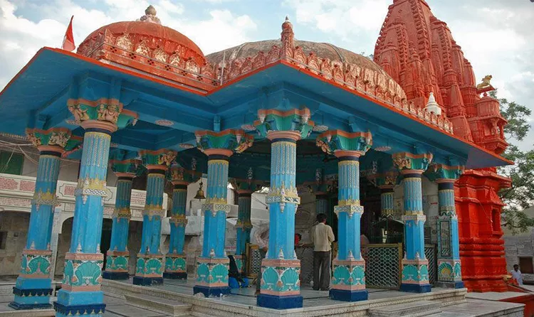
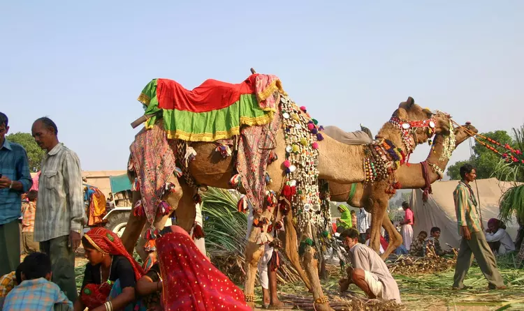

The Pushkar Lake is situated in the town of Pushkar in Ajmer. The Pushkar Lake is an important site of pilgrimage for Hindus.
It is believed that a dip in the Pushkar Lake can cleanse sins and cure skin diseases.Furthermore, the Brahma temple situated near the Pushkar Lake also attracts a large number of tourists from all over the country and the world. There are about 500 Hindu temples situated on the banks of the Pushkar Lake. The lake has about 52 bathing ghats and hundreds and thousands of pilgrims throng these ghats to take a holy dip, especially during Kartik Purnima.The Brahma temple is one of the main attractions near the Pushkar Lake.
PUSHKAR AND AJMER
PLACES TO VISIT
01 PUSHKAR LAKE

02 KHAWAJA GHARIBNAWAJ DARGAH

Khawaja Garib Nawaz Dargah in Ajmer is the crypt housing Hazrat Khwaja Moin-d-din Chisti’s tomb who originally was the founder of the religion Islam and was renowned for preaching Islam around the world. Known for his noble teachings, the Sufi came from Persia and expired in Ajmer in the year 1236.
03 ANASAGAR LAKE

Anasagar Lake is originally founded by King Anaji Chauhan, grandfather of Prithviraj Chauhan in between the time span 1135 to 1150 AD. An artificial lake, Anasagar Lake is considered to be Ajmer’s most famous lakes and India’s largest lakes.
The lake is titled after its founder.
Distance or location: The Anasagar Lake is located at Ajmer in Rajasthan, India.
Best time to visit:Preferably the ideal time to visit Ana Sagar Lake is in between the month October to March during the winters when the temperature is pleasant and tranquil. Moreover, the water level at this time in the lake is almost full. It is certainly not a good idea to visit the Anasagar Lake during the summertime when the sun is scorching. Also, during summers the lake gets dried up.
Charges: There are no charges incurred as the entry fee is free. But if the tourist wishes to go for boating, then the charges per person is 160 INR or 2.464.
Distance or location: The Anasagar Lake is located at Ajmer in Rajasthan, India.
Best time to visit:Preferably the ideal time to visit Ana Sagar Lake is in between the month October to March during the winters when the temperature is pleasant and tranquil. Moreover, the water level at this time in the lake is almost full. It is certainly not a good idea to visit the Anasagar Lake during the summertime when the sun is scorching. Also, during summers the lake gets dried up.
Charges: There are no charges incurred as the entry fee is free. But if the tourist wishes to go for boating, then the charges per person is 160 INR or 2.464.
04 MAHARANA PRATAP SMARAK

Maharana Pratap Smarak is a retrospective site that is solemnly and staunchly dedicated to Maharana Pratap Singh and his faithful horse named Chetak. This historic architecture was built in 1948.
The initiative to construct the architecture was taken by Maharana Bhagwat Singh of Mewar with the assistance of a public trust. The statue constructed of Maharana Pratap is about eleven feet high with an overall weight of seven tonnes.
Distance or location: Maharana Pratap Smarak is located at the crest of Moti Magri which is the Pearl Hill.
Best time to visit: Best time to visit Maharana Pratap Smarak is during the winter time in between the months October to March because the weather is pleasant and cool.
Charges: The charges incurred for visiting Maharana Pratap Smarak is 20 INR or 0.308 USD for adults and 10 INR or 0.154 USD for kids..
Distance or location: Maharana Pratap Smarak is located at the crest of Moti Magri which is the Pearl Hill.
Best time to visit: Best time to visit Maharana Pratap Smarak is during the winter time in between the months October to March because the weather is pleasant and cool.
Charges: The charges incurred for visiting Maharana Pratap Smarak is 20 INR or 0.308 USD for adults and 10 INR or 0.154 USD for kids..
05 BRAHMA TEMPLE

Brahma Temple, a Hindu temple is located in the state of Rajasthan at Pushkar, which is near to the holy Pushkar Lake delineating indelible legends. The temple is the most eminent and considered to be one of the few temples in India which is dedicated to Brahma.
Distance or location: The address of Brahma Temple is Brahma Temple Road, Ganahera at Pushkar in Rajasthan.
Best time to visit: The best time to visit the Brahma Temple is in between the months October to March during winter time as the temperature is around twenty-two degree Celsius at this time.
Charges: There is no entry fee.
Distance or location: The address of Brahma Temple is Brahma Temple Road, Ganahera at Pushkar in Rajasthan.
Best time to visit: The best time to visit the Brahma Temple is in between the months October to March during winter time as the temperature is around twenty-two degree Celsius at this time.
Charges: There is no entry fee.
06 PUSHKAR CAMEL FAIR

The Pushkar Camel Fair is one of the main attractions of Ajmer. This five-day annual cattle and livestock fair attracts a large number of tourists from all over the country and the world.
Apart from the trade of camels and livestock, a number of interesting competitions such as Matka Fod, Longest Moustache and Bridal Competition are held here.The Pushkar Camel Fair is one of the largest camel fairs in the world. As per the Imperial Gazetteer of India, as many as 1,00,000 pilgrims participated in the fair in the 1900s. To attract more tourists, the state tourism department has also introduced a friendly cricket match between the local club members and random tourists.However, the main attraction of the Pushkar Camel Fair is the competition of camels. Camels are decked in jewellery and rallied to the grounds.